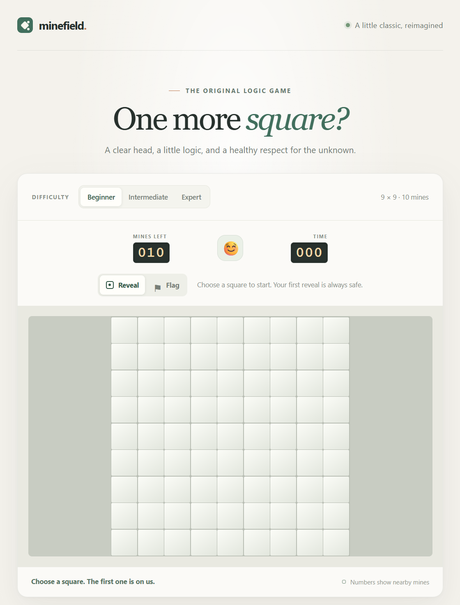
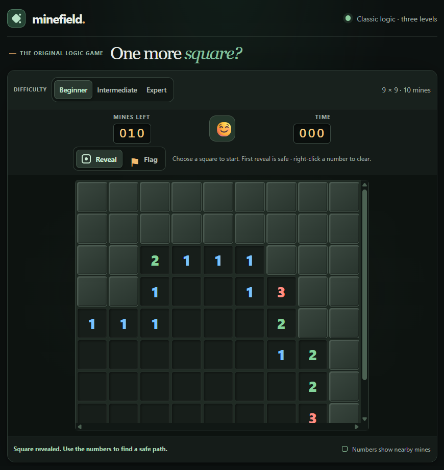

AGENTIC CODING LOG
How Minefield was built
A person wrote short prompts. AI coding agents planned the work, wrote the code, tested it, and kept these notes. Each step below shows what was asked, what changed, and the commit that shipped it.
- Prompts
- 9
- Commits
- 9
- Dependencies
- 0
- Build steps
- 0
-
Sep 25 Build a playable Minesweeper game
Prompt Create a Minesweeper website anyone can play, and keep a log of prompts and results.
Result Three difficulties, a safe first reveal, number clues, flood reveal, flags, a timer, win and loss states, and a game engine kept separate from the page so it could be tested.

The first playable build. -
Sep 25 Make it work on desktop and add chording
Prompt Use the full width on a PC so the whole board fits, and let right-click on a number clear its neighbors when enough flags are placed.
Result A wider desktop layout and right-click chording, with a backup screenshot saved first.
-
Sep 25 Fill the screen and switch to a dark theme
Prompt Fill the screen, make empty squares look different from unopened ones, and use a dark theme.
Result The dark layout that fills the window, with raised covered squares and sunken open squares.

The dark theme. -
Oct 2 Publish it on GitHub
Prompt Set up a public repository and allow pushing.
Result A public repository, GitHub Pages hosting, and the private prompt log and old screenshots kept out of Git.
8f232d1Add playable Minesweeper project 9 files · +1726cfdb629Document public GitHub Pages deployment 2 files · +6 −10
-
Oct 2 Tell the agentic coding story
Prompt Rewrite the README around agentic coding, with a short prompt and result log and screenshots of how the site changed.
Result A README built around the prompt-to-product story.
cf52306Emphasize agentic coding in project README 3 files · +38 −27
-
Oct 3 Plan improvements and ship them
Prompt Review the project, plan improvements, then build them all and publish.
Result Custom boards up to 24 × 40, undo, keyboard chording with C, best times per difficulty, and five new engine tests.
c62564eAdd custom boards, undo, keyboard chording, and best times 7 files · +463 −57
-
Oct 12 Refresh the agent instructions
Prompt Summarize the workspace, then rewrite the agent instructions to be better.
Result Instructions with a file map, the engine's rules for itself, and a dated status, each checked against the code.
ba048f0Refresh agent instructions and add CLAUDE.md import 2 files · +46 −19
-
Oct 12 Ten ideas, one at a time
Prompt Suggest ten ways to expand the project, add them as a checklist, and build them one by one until none are left.
Result A solver that powers no-guess boards, hints, and an AI player that explains its moves; a daily challenge and shareable board links; game replay; stats with 3BV/s; offline play; accessibility settings; and this page. The agent also fixed four bugs it found on the way: Undo needed two presses, custom boards failed to load, the custom size panel showed on every level, and the timer started at three digits.
-
Oct 26 Plan v2: rewrite by the rules, then add accounts
Prompt Rewrite the code following my coding rules and compare what improved, add a database login to track players, and report it here. Split the work into one-hour steps with a checklist.
Result An eleven-step plan. Before any code changed, the agent saved a baseline: the output of 20 seeded boards, 3 daily boards and 8 share links, so the rewrite can prove old links still build the same boards; size and speed numbers to compare against; and screenshots of every screen. This page moved onto a stylesheet shared with the game.
v2: rewritten with coding rules
The whole game is being rewritten to follow the author's coding rules: no duplicated logic, check every hidden link between modules, keep code lean. Results will be measured against the v1 baseline below.
- v1 lines
- 4345
- v1 functions
- 110
- v1 tests
- 30
- Expert no-guess
- 17 ms
Progress: baseline saved. The comparison table fills in as each step lands.
How the work was done
- Instructions as the source of truth.
AGENTS.mdholds the rules, file map, and checklist that every agent session reads first. - Rules stay testable. The game engine, solver, seeds, and stats are plain modules with Node tests; the page only draws and handles input.
- Check before claiming. Each change was run through the tests and checked in a real browser on desktop and phone sizes.
- Screenshots before visual changes. A baseline is saved first, so every change can be compared.